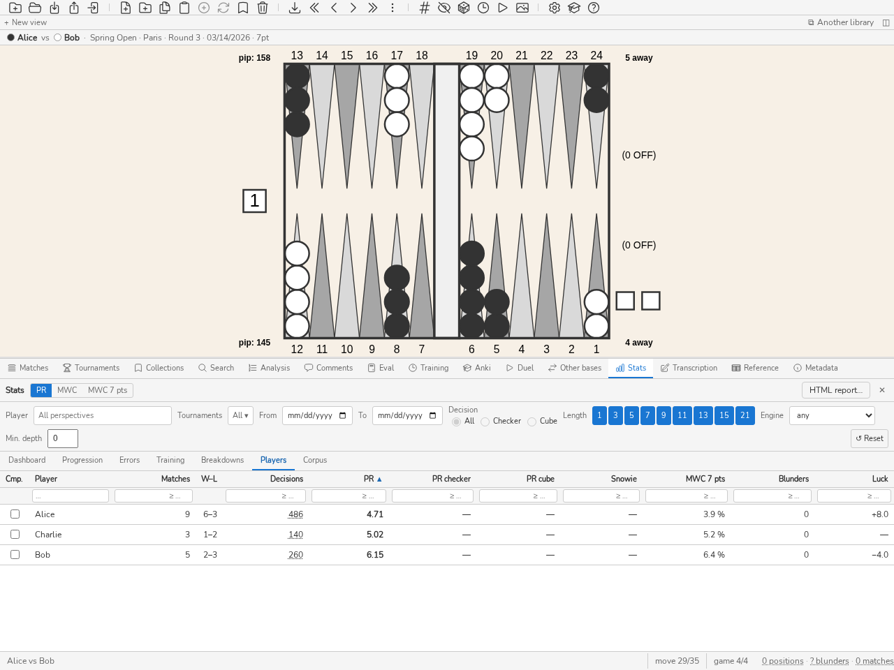

統計
Stats パネル
はじめに
Stats パネルでは、データベースにインポートされたポジションをもとに、自分のプレイレベルを分析し、時間の経過に伴う上達を追跡できます。すべてのポジションまたはフィルターされた部分集合について、PR（Performance Rating）とMWC cost（Match Winning Chance cost）の指標を計算して表示します。
Stats パネルは特に次の用途に役立ちます：
全体の PR を使って、レベル帯（ワールドクラス、エキスパート、上級者など）に対して自分のレベルを把握する。
Progression タブのグラフを使って、トーナメントごと、またはマッチごとに 自分の上達を追跡する ；
自分の弱点を特定する ：Erreurs タブで、プレイした手とキューブの判断の内訳、およびエラーの大きさの分布を確認できます ；
データベースのプレイヤー同士を比較する——プレイヤータブで、1人につき1行。大会全体を追うのに向いています。
任意の指標をクリックすることで、該当するポジションに直接アクセスする（ドリルダウン）。
パネルの各数値の定義、式、不確実性、限界は 指標と学習ツール にまとめています。
パネルを開く
Stats パネルを開くには：
CTRL-D を押します。
コマンドラインで
statsまたはstコマンドを入力します。
注釈
パネルはフィルターを変更するたびに自動的に更新されます。単に PR ↔ MWC を切り替えるだけでは統計を再計算しません。両方の指標はバックエンドによって同時に計算されます。
フィルターバー
パネル上部のフィルターバーでは、計算をポジションの部分集合に限定できます。
プレイヤーの視点
プレイヤーフィールドは、分析対象のプレイヤーで統計を絞り込みます。数文字入力すると、それを含む名前に一覧が絞られます。クリックまたは Enter でプレイヤーを選び、✕を押すか欄を空にすると、すべての視点に戻ります。
フィルターは、パネルのすべてのタブでひとつだけであり、セッションをまたいで保持されます。他のパネルからも設定できます。マッチのヘッダーや盤面上のバーにあるプレイヤー名でそのプレイヤーのすべての統計が開き（トーナメントと日付は空になります）、トーナメントのヘッダーのStatsボタンでそのトーナメント全体の統計が開きます（日付は空になり、プレイヤーは保持されます）。開始日より前の終了日は拒否され、欄は適用中の日付に戻ります。
利用可能なフィルター
トーナメント — 1 つまたは複数のトーナメントへの限定。複数のトーナメントを同時に選択できます。
日付 — 期間の範囲（開始 … 終了）。開始日のみが指定された場合、それ以降のポジションが含まれます。
判断タイプ — すべて／プレイした手／キューブの判断。
マッチ長 — 特定のマッチ長への限定（1、3、5、7、9、11、13、15、21 ポイント）。複数の長さを組み合わせられます。
エンジン と 最小深さ — 指定したエンジンで、または少なくとも指定した深さ（ply）で分析された判断のみを残します。エンジン メニューには、データベースの解析に現れるエンジン（eXtreme Gammon、GNU Backgammon…）が表示されます。
↺ リセット ボタンは、プレイヤーを除くすべてのフィルターをゼロに戻します。
注釈
フィルターは blunderDB の設定（config.yaml）に保存され、次回起動時に復元されます。
PR / MWC の切り替え
パネル上部の PR / MWC ボタンは、すべてのタブで表示される指標を切り替えます。
PR（Performance Rating）
カウントした判断 1 回あたりの平均エクイティ誤差を、eXtreme Gammon と GNUbg に倣って 500 倍した値です。PR 5.0 は 1 判断あたり 0.010 のエクイティ損失、つまり 10 ミリポイント (mpt) に相当します。正確なカウント規則（どの判断が分母に入るか、スコアをどう変換するか）は PR (Performance Rating) にあります。
パネルが進捗曲線の背後に描くレベル帯は、blunderDB 独自の目安です。これらのしきい値について権威ある刊行物はありません。各帯の上限は含まれません。PR が 4 の場合はエキスパートではなく上級者です。
レベル
PR
ワールドクラス
< 2
エキスパート
2 – 4
上級者
4 – 6
中級者
6 – 9
カジュアル
9 – 12
初級者
≥ 12
MWC cost（Match Winning Chance cost）
エラーのために失われたマッチ勝率の累積で、フィルターされたデータセット全体について計算されます。データベースの現在の MET から計算され、既定は blunderDB に内蔵の Kazaross-XG2 です。別のテーブルで計算されたマッチスコアの分析は「別の MET」となり、統計から除外されます。
注意
MWC cost は money-game のポジション（マッチの懸かりがない）には 適用されません。これらのポジションは MWC の計算から除外されます。MWC の値は使用される MET に依存します。異なる MET を使用するソフトウェア間では直接比較できません。
MWC損失（7ポイント換算）
プレイヤーが全ての判断（チェッカープレイ、キューブ、テイクまたはパス、キューブ付き）で失ったマッチの勝率を、7ポイントマッチに換算したものです。Nポイントのマッチでプレイヤーが MWC を L 失った場合:
L₇ = L × √(7 / N)
7ポイントのマッチでは、これはそのマッチの MWC 損失であり、eXtreme Gammon が表示する値です。平方根は FIBS の式のモデルに由来します。同じ実力であれば、プレイヤーの損失はマッチの長さの平方根に比例して増えます。7ポイントはトーナメントで最も一般的な長さなので、基準の長さとしています。
完全なプレイヤーに対して失ったマッチの割合として読みます。12.3 % は、エンジンに対する勝率が 50 % のところ、7ポイントマッチで 37.7 % しかなかったことを意味します。ツールチップでは、FIBS の式を逆算して、エンジンに対する Elo として示します。D = (2000 / √7) × log₁₀(q / (1 − q))、ただし q = 0.5 − L₇。損失が 49 % を超えると、式は有限の値を持たなくなり、表示される Elo は上限値（「≤」）になります。2つの数値は、プレイヤーを同じ順序に並べます。
PR を置き換えるのではなく補完します。PR は誤りを判断の数で割りますが、その数は何を判断として数えるか（強制手、自明なキューブ判断）によって変わります。MWC 損失は判断の数を数えません。各誤りは、それが行われたスコアで実際に失った分だけの重みを持ちます。
複数のマッチ（プレイヤーやトーナメントの統計）では、損失と長さの平方根をそれぞれ合計してから比を取ります。L₇ = √7 × ΣL / Σ√N。したがって、7ポイントのマッチは1ポイントのマッチより重く、1つのマッチだけならそのマッチ自身の値になります。
単独のマッチは非常にばらつきが大きく、数回の大きなミスで値が倍近く変わります。バッジとマッチの総括(マッチの総括)は、そのゲームを再標本化して95 %区間を示します。集計(プレイヤーやトーナメントの統計)はマッチを再標本化して示します。プレイヤーフィルタがない場合、マッチの両側の席は同じ局面をプレイするので、1 つの単位になります。少なくとも3ゲームまたは3マッチが必要で、それらがすべて同じ損失になってはいけません。そうでなければ区間はありません。したがって統計のマッチ単位の行にも区間はなく、1 つの単位です。1つのマッチだけでプレイヤーを順位付けしないでください。
注意
マネーゲームにはマッチの長さがないため、MWC 損失（7ポイント換算）は定義されず、パネルは数値を表示する代わりにそのことを示します。MWC コストと同様に、MET に依存します。
ボタンの 3 つ目の選択肢 MWC 7 pts は、この損失を Progression タブに描画し、ダッシュボードのカードと Errors タブのチェッカー／キューブ比較に表示します。比較は同じマッチでチェッカーとキューブに分けられます（2 つの部分の和が全体になります）。プレイヤーのランキングにも専用の列があります。7 ポイント換算のないグラフ（キューブアクション別）は MWC cost のままです。
PR ↔ MWC の切り替えは瞬時に行われます。バックエンドでの再計算は実行されません。
HTML レポート
パネル見出しのHTML レポートボタンは自己完結の文書を作ります。外部画像も、リモートのスタイルシートも、スクリプトも持たない一つのファイルです。図は SVG を直接埋め込んだもので、画面上の盤と同じ描画、同じパレットで描かれます。どのブラウザでも開き、メールで送れ、ブラウザ自身で PDF に印刷できます。誰もがすでに持っているものを作るために PDF 生成器を同梱せずに済みます。
現在の範囲の指標（局面数、マッチ数、計上した判断、総合・チェッカー・キューブの PR）に続いて、最も損失の大きい 10 の判断が並びます。それぞれに図、損失、出どころのマッチ、そして解析があれば最善手が付きます。
このドキュメントは画面ではなくエンジンが作成します。コマンドライン(stats report --html、stats — 繰り返されるミス を参照)と HTTP デーモン(ルート stats.report)は、インターフェースの 9 つの言語のいずれかで同じレポートを生成します。図をボードのパレットで描くのはグラフィカルアプリケーションだけで、ほかの 2 つは既定のパレットを使います。
レポートは Stats パネルの現在のフィルタを反映します。範囲を述べないレポートは、数字が何も意味しないレポートです。トーナメント、期間、対戦者などのフィルタを整えてから出力してください。
ダッシュボード タブ
ダッシュボードタブは主要指標の要約ビューを提供します。上から下へ読みます。レベルカード、次に取り組む内容(学習プラン、top blunders)、次に読み取り(移動 PR、学習の前後、符号付きバイアス)の順です。各カードの説明はそのタイトルのツールチップにあります。

ダッシュボード タブ：全体 PR、チェッカー PR、キューブ PR。
レベルカード
3 つのカードが次の項目について PR（または MWC）を表示します：
PR 全体 — すべての決定（手＋キューブ）。
PR チェッカー — チェッカーの決定のみ；
PR キューブ — キューブの決定のみ。
カードをクリックすると、対応する部分集合のポジションが分析パネルに読み込まれます（ドリルダウン）。4枚目のカードMWC損失（7ポイント換算）は、PR / MWC ボタンの選択にかかわらずこの損失を区間とともに示します。何も読み込みません。
カードの下の合計行は、フィルターのトーナメント数、マッチ数、判断数を数えます。トーナメント数をクリックすると、それらのトーナメントがトーナメントパネルに開きます。トーナメントが 1 つだけなら直接開き、複数ならリストを絞り込みます。そのときリストには「統計から開いた N 件のトーナメント ×」ボタンが付き、これで全体のリストに戻ります。
判断数はそのポジションを開き、マッチ数はそれらのマッチをマッチパネルで開きます。ただし判断タイプまたは出所フィルターが有効なときは、一覧が開くよりも少ないマッチ数を数えるため、単なる数値のままです。
注釈
判断の総数は、各カードの下部にマウスオーバー時に表示されます。
学習プラン
学習プランカードは「今、何に取り組むべきか」に答えます。繰り返しの誤り（Erreurs タブ）は、フィルターがどこで最も失ったかを示しますが、学習がどこで最も報われるかは示しません。本当に難しいポジションのファミリーは誰にとっても高くつき、誤り三つでは傾向とは言えません。プランはその両方を補正します。
ファミリーとは、繰り返しの誤りのグループです。プラン、判断の種類（チェッカーかキューブ）、テーマの組です。テーマのない誤りはファミリーを作りません。学習すべきものを何も示さないからです。
各誤りは Match パネルと同じく MWCで数値化されます。損失 ℓ と、その 難しさ d、つまり同じポジションで基準プレイヤーが被ったであろう損失です（Match パネルの判断ごとの難しさを参照）。フリーゲームの誤りには MWC がなく、「数値化なし」として数えられるだけです。
ファミリーの 回収可能 MWCは、その誤りにわたる ℓ − d の合計です。ファミリーの頻度に、難しさを超えた平均損失を掛けたものです。これらのポジションを基準プレイヤーのように指せば取り戻せる量です。避けられる誤りのファミリーは上がり、誰もが間違えるポジションのファミリーは下がります。
各数値には 95 % 区間が付きます。ファミリーがプランに入るのは、誤り 5 件以上で、区間が完全にゼロより上にあるときです。プランは区間の下限で並べられるため、回収可能量が同じなら、より確かなファミリーが先に来ます。それ以外は一覧の下に 要確認として順位なしで挙げられます。プランはノイズへ誘導しません。同じ行は、プラン外の誤り(テーマなし、数値化なし)も数えます。
プランの各行には、順位、ファミリー、最初のファミリーの回収可能 MWC に対する比で長さが決まるバー、この MWC とその区間、誤りの件数が表示されます。プランの各局面数（ファミリーごと、要確認、プラン外）はクリックでき、まさにその局面をリストに読み込みます。
各ファミリーには三つの操作があります。学習はそのポジションで学習キューを開き、基準プレイヤーとの差が最も大きいものから並べます。クイズは トレーニングパネルの判断練習をそのうち二十件で始めます。Ankiはカードのデッキを作ります。カードの先頭の 上位 3 ファミリーのクイズは、先頭 3 ファミリーのポジションから二十件を出題します。プランはパネルのフィルターに従います。自分のプランを得るにはプレイヤーを設定してください。コマンドラインでは blunderdb stats plan です（stats — 繰り返されるミス を参照）。
学習の前後
学習の前後カードはプランの輪を閉じます。取り組んだことは、実戦のマッチで損失を減らしたでしょうか。このカードがなければ学習は印象で判断されます。あるなら、作業をしても動かないファミリーは方法を変えるべきだと教え、改善したファミリーはプランの席を譲れます。
ファミリー（プランのもの）は、そのポジションのいずれかに対する最初の学習アクションの日付に学習済みになります。学習キューの「学習済み」マーク、Anki の復習、クイズの回答がそれにあたります。カードを作ることや、ポジションをコレクションに入れることは含まれません。
学習済みのファミリーごとに、カードは二つのウィンドウを比べます。その日より前に行われたマッチと、後に行われたマッチです（当日は除外）。それぞれで損失率は、ファミリーの誤りで失われた MWC を、同じプランと同じ種類のすべての判断に対する割合で表したもので、100 判断あたりの MWC ポイントで示されます。
ゲインは、前の率から後の率を引いた値で、95 % 区間が付きます。判定が「改善」（または「悪化」）になるのは、各ウィンドウが少なくとも 30 判断を含み、区間がゼロを含まない場合だけです。それ以外は「判定不能」または「判断数不足」のままです。
各期間の横の 局面 列は、その決定の異なる局面を数え、クリックで開きます。括弧内の数は引き続き決定数で、率の分母です。
これは変化であって効果ではありません。ファミリーは損失が大きかったから学習されるのであり、ゲインの一部は平均への回帰です。対戦相手、フォーマット、サイコロは何も統制されていません。コマンドラインでは blunderdb stats effect です（stats — 繰り返されるミス を参照）。
符号付きバイアス
符号付きバイアスカードは、どれだけ間違えるかだけでなく、どちらの方向に間違えるかを示します。「テイクしすぎ」は PR よりも直しやすいものです。見直すべきルールが名指しされるからです。各バイアスは、一方向の誤り判断の割合から、もう一方向の誤り判断の割合を引いたもので、95 % 区間が付きます。傾向が名指しされるのは、20 判断以上で、区間がゼロを含まない場合だけです。
テイク／パス — キューブへの応答について：誤ったテイク（ボットはパス）から誤ったパス（ボットはテイク）を引いたもの。同じポジションでのあなたのテイク率からボットのテイク率を引いた値と完全に一致します。
ダブル — ダブルの判断について：早すぎるダブル（ボットはダブルしない、またはポジションがダブルには良すぎる）から、見送ったダブルを引いたもの。同じバイアスがスコア別（あなたの away、相手の away。ポストクロフォードのスコアは 1 ポイントとして数えます。フリーゲームは別枠）にも示されます。判断数が十分あるスコアが対象です。
ブロット — 接触のあるチェッカームーブについて：最善手よりブロットを多く残す手から、少なく残す手を引いたもの。手は、表記にかかわらず、残るボードで識別されます（「13/7(2)」、「8/5*/4」）。ムーブジェネレーターがなお再現できない手は除外され、除外された手の割合は表の下に示されます。バイアスはブロットの露出を重みづけせずに数えます。射程外のブロットも、露出したブロットと同じ一つとして数えられます。
各カウントの横に、ミリポイント単位のコストがあり、その傾向が損失につながるかどうかがわかります。複数のマッチで指された局面は、それぞれで指された手とともに数えられます。バイアスはパネルのフィルターに従います。コマンドラインでは blunderdb stats biases です（stats — 繰り返されるミス を参照）。
各決定数（すべて、一方向、もう一方向）の後には 局面 列が続きます。それらの決定の異なる局面で、クリックで開きます。複数のマッチで打たれた局面は、マッチごとに一つの決定として数えられますが、局面としては一つです。
直近 N 回の判断にわたる移動 PR
直近 N 回の判断（N = 5、10、50、100、250、500、1000）について計算された PR（または MWC）値の列により、最近の傾向を把握できます。グレー表示の値は、利用可能な判断数を超える N に対応します。
値をクリックすると、対応する直近 N 件のポジションが読み込まれます。
Top blunders
最悪のエラー（または MWC cost）上位 10 件のリストで、大きさの降順に並べられています。行をクリックすると、該当するポジションが分析パネルに読み込まれます。
Progression タブ
Progression タブは、時間の経過に伴うレベルの推移を示します。
タブの先頭に目標があります。「12 週間で PR < 5」。目標、期限、そしてどこへ向かっているかを告げる傾向。それだけです。採点したり、褒めたり、催促したりし始める目標は、別の機能であってこれではありません。
候補ボタンは、現在の水準から目標を提案します。いまいる帯の下限、つまり次の帯への入り口です。「少し良く」では何にも根ざしませんが、段位を提案すれば意味があります。中級から上級に上がることは、目に見えるし語れます。
傾向は、あなたのマッチの PR に最小二乗法をあてはめ、期限まで延ばしたものです。3 マッチ未満では何も言いません。2 点の間に直線を引くのは、支えられない主張だからです。そして文言は毎回そう述べます——傾向は予測ではありません。
目標は設定ではなくデータベースのメタデータに保存されます。そのライブラリについての事柄なので、マシンではなくファイルに従います。スキーマの変更はありません。metadata はすでにキーと値の表で、blunderdb info からもデーモンからも読めます。
トーナメントごとの曲線
折れ線グラフは各トーナメントの PR（または MWC）を表示します。トーナメントごとに 1 点、名前をラベルとし、日付（なければ最も古いマッチの日付）の時系列順に並びます（Y 軸：指標の値）。色の帯がレベルのしきい値を示します。
グラフ上の点をクリックすると、2 つのオプションを持つコンテキストメニューが開きます：
トーナメントを開く — トーナメントパネルでトーナメントを開きます。
ポジションを開く — トーナメントのすべてのポジションを分析パネルに読み込みます。
マッチごとの散布図
散布図は各マッチを表します（X 軸：日付、Y 軸：PR または MWC）。点の大きさはマッチ内の判断の数に比例します。日付のないマッチは表示されません。
点をクリックするとコンテキストメニューが開きます：
対局を開く — マッチパネルでマッチを開きます。
ポジションを開く — マッチのすべてのポジションを分析パネルに読み込みます。
Erreurs タブ
Erreurs タブはエラーの原因を分解して示します。

Errors タブ：キューブアクション別の PR 内訳。
繰り返されるミス
タブの先頭にある表は、現在のフィルターのミス（プレイヤーで絞り込んでいれば、そのプレイヤー一人分）をプランとテーマごとにまとめ、コストの大きい順に並べます。「どこで最も失っているか」に答える表で、たとえば「ホールド・ブロットが多すぎる」のように表示されます。
ミスとは、コストがライブラリの「ミス」しきい値に達した、カウント対象の判断です。
プランは手番のプレイヤーのもので、内訳タブが示すものと同じです。
チェッカープレイのテーマは、分析パネルの説明文のルールが挙げるものです。ギャモン過小評価、ブロットが多すぎる、ポイント未形成、消極的すぎる、のいずれかです。キューブ判断のテーマはミスの向きで、後述のキューブミスの方向と同じです。ダブル見逃し、早すぎるダブル、誤ったパス、誤ったテイクがあります。
どのルールも確信をもって名付けられないミスは、推測されません。順位から外れ、表の下にプランごとに1行で別に表示されます(「テーマ未特定:N件のミス、コストX」)。これもクリックできます。この残りは最も重いことがしばしばです。説明文が判断を下すのは60 mp以上、つまりミスのしきい値より上だけなので、他と一緒に順位付けすると、何も語らない表の先頭に立ってしまうからです。
コストは、そのグループがフィルターの PR に占める割合です。グループのミスに PR の式を適用し、カウント対象のすべての判断で割ったものです。したがって、グループのコストの合計が PR を超えることはありません。
グループ、またはそのミス数をクリックすると、そのポジションがコストの大きい順に読み込まれます。テーマは表示のたびに再計算され、保存されません。プランと同様、派生したラベルであり編集できません。コマンドラインでは blunderdb stats recurring を使います（stats — 繰り返されるミスを参照）。
各行には、誤りから学習へ進む3つの操作があります。このグループのクイズは、トレーニング パネルの「決定」練習をそのグループのポジションで開始し、Ankiデッキはそれらからカードのデッキを作り、コレクションはそれらを新しいコレクションに入れます。表の上の最悪の3グループのクイズは、最もコストの高い3グループのポジションから20個を無作為に引きます。コマンドラインでは、stats recurring --quiz がこれらのポジションを引き、--deck がデッキを作成します。
キューブのアクションごとの内訳
棒グラフが各種のキューブの判断について PR（または MWC）を表示します：NoDouble、DoubleTake、DoublePass、TooGood。各バーはツールチップで判断数とブランダー率も示します。
バーをクリックすると、そのキューブのアクションに対応するポジションのうち エラーがあるものだけ が読み込まれます（ドリルダウン）。
キューブエラーの方向
上の内訳はキューブの判断がどれだけ損をしたかを示します。この表はどの方向に誤ったかを示します。
キューブ局面には、別々のプレイヤーが下す2つの判断があり、ここでは2行に分けて示します。
提示— キューブを持つ側がダブルするか、しないか。その誤りは見送ったダブル（ダブルすべきだった）と早すぎたダブル（すべきでなかった）です。
応答— キューブを差し出された側がテイクするかパスするか。その誤りは誤ったパス（正しくはテイクだったのにパスした）と誤ったテイク（正しくはパスだったのにテイクした）です。
2行を分けているのは意図的です。同じ人が遅めにダブルし、かつ緩めにテイクすることは十分にありえます。単一の指標ではそれを「バランスが取れている」と呼び、情報の両半分を失ってしまいます。
各セルには判断の件数が表示され、ツールチップには失ったエクイティの累計が出ます。セルをクリックすると該当する局面が読み込まれます。ゼロのセルはクリックできません。
注釈
この表は判断を数えるだけで、評価は下しません。どれだけの偏りから傾向と呼ぶに値するかは、母数と基準点しだいであり、そのどちらもエンジンの持つデータではありません。
Checker / Cube の内訳
比較図が、プレイした手の PR とキューブの判断の PR を並べて表示します。バーをクリックすると、エラーがある部分集合のポジションが読み込まれます。
エラーの大きさのヒストグラム
ヒストグラムが、ミリポイント（mpt）で表した大きさに従ってエラーを分布させます（区分：0–5、5–10、10–25、25–50、50–100、≥ 100）。バーをクリックすると、その区分のポジションが読み込まれます。
時間経過でのトレーニング
トレーニング タブは、同じ暦のウィンドウ(週 または 月、選択可)の上に、進歩を三つの方法で測る三つの系列を並べて表示します。
クイズの PR:トレーニングパネルの判断練習のセッションの PR で、判定した判断の数で重み付けされます。実際の PR と同じ尺度で計算されるため、比較できます。
現在のフィルタの マッチの PR(判断の数で重み付け)。
Anki の定着率:すでに学習済みのカードの復習のうち、難しい 以上と評価されたものの割合で、右軸(%)で読みます。
グラフの下のプレイプラン別のクイズPRは、ライブラリの局面から出題されたクイズの判断を、悪いプランから順に並べ、そのプランを最後にプレイしたウィンドウのPRとともに示します。
括弧内は各値の背後にある判断または復習の数です。サンプルのないウィンドウには値がなく、ゼロではなく破線になります。ウィンドウのマッチの判断数は、そのポジションを開きます。フィルターが絞り込むのはマッチだけで、クイズと Anki のジャーナルはあなた自身のもので、プレイヤーを持ちません。追加で記録されるものはなく、三つの系列は既存のジャーナルから読み直されます。コマンドラインでは blunderdb stats training を使います（stats — 繰り返されるミスを参照）。
内訳タブ
内訳 タブは、全体の数字が数えるのと同じ判断を四つの軸で切り分けます。どの軸も「何を判断と数えるか」を定義し直しません。それをすれば同じ名前の二つ目の PR になってしまいます。
ゲームの段階別——序盤、中盤、レース、ベアオフ。「レースでの PR と接触局面での PR」に答えるのがこれである。ラベルは盤面から計算される（検索パネル を参照）。段階が一度も計算されていないデータベースはすべてを未分類に入れ、
blunderdb repairがそれを埋める。戦型別 — レース、ブリッツ、ホールディング、バックゲーム、プライム対プライム……。分類器が存在する理由そのものの内訳です。「どこで最も失っているか」を戦型ごとに示します。フェーズと同じ派生ラベルで、留保も同じ、
blunderdb repairが同じように埋めます。タグ別——コメントに書かれた
#語。一つの局面が複数持つことがあり、これらの行は合計に一致しない。パネルは表の下にそう書く。タグは性質を述べるものであって、分割するものではない。スコア別——両陣営の残り点を、手番側、すなわち判断する側から読んだもの。Money行はマネープレイである。判断が十件未満のセルは隠さず件数を見せたまま灰色にする：読むには少なすぎるが、省略は検証可能なままである。
局面列と 大悪手列は重複しないポジションを数え、各数値はリンクです。クリックすると、ステータスバーのカウンターと同様に、まさにそれらのポジションが分析パネルに読み込まれます。大悪手は、少なくとも一つの判断が大悪手であるポジションを数えます。複数のマッチで指されたポジション(たとえばオープニング)はここでは一度だけ数えられますが、判断列は毎回数えます。PR の分母だからです。
各行は 95 % 信頼区間（列 95 % CI）を持ち、固定の 10 判断というしきい値に代わります。これは PR にどれだけの価値があるかを示すもので、いくつの判断が支えているかだけではありません。区間は、判断やゲームではなく、選択範囲の マッチ を再標本化して求めます。同じマッチのゲームは対戦相手、セッション、疲労を共有しており、独立とみなすと区間が狭くなりすぎるためです。プレイヤーフィルタがない場合、マッチの両側の席は 1 つの単位になります。3 マッチ未満にしか基づかない行、またはすべてのマッチが同じ PR になる行は、判断が多くても区間がなく、グレー表示になります。2 マッチではばらつきについて何も分からず、同一のマッチは互いに一致していることを示すだけで、PR が正確であることを示すわけではないためです。学習のためには、区間が全体の PR を上回り続ける局面群は確立した弱点であり、区間が広い行はまだ学習計画の根拠になりません。ダッシュボードの全体の PR も、カードの下に同じ区間を持ちます。
注釈
スコア別の内訳では、ポストクロフォードのスコアは 1-away として読まれます。同じスコアのクロフォードゲームとポストクロフォードのゲームは、同じセルに入ります。
学習と実戦
blunderdb list --type study --days 30 は、戦型ごとに三つの数を並べます。その期間に復習した 異なる局面 の数、その期間の 前 の PR、その 後 の PR です。
三つの数だけで、四つ目はありません。増減の列も矢印もありません。ここでは何一つ条件を揃えていないからです。相手が強くなったのかもしれず、形式を変えたのかもしれず、今月はレースを多く打っただけかもしれません。並べて読むのは読者の仕事です。効果を告げる列は、これらのデータが持たない因果を主張することになります。数そのものは正確です。
復習は 異なる局面 の数で数えます。ひと月に四回復習したカードは学習した局面が一つであり、繰り返しを数えれば詰め込みのひと月が網羅のひと月に見えてしまいます。一方 PR の判断はすべて数えます。どれも一度ずつ下されたからです。十未満の判断に基づく PR は — と表示され、その母数が隣に見えます。
プレイヤータブ
前の五つのタブは 一人の プレイヤーを説明します。Players タブはそれらすべてを比較します。データベースのプレイヤーごとに一行を表示し、特定のプレイヤーではなく大会全体を追う主催者のニーズに応えます。


Players タブ：プレイヤーごとに一行、どの列でも並べ替え可能。
列（左から順に）：
列 |
意味 |
|---|---|
プレイヤー |
マッチに記載されているとおりの 名前。二つの綴りで登録されたプレイヤーは二行に表示されますが、一方がもう一方のエイリアスである場合（設定の Corpus セクション）は除きます。その場合、行は正規の名前を示します。 |
対戦数 |
選ばれた期間に行われた対戦の数。 |
勝–敗 |
勝ちと負け。未了の対戦（記録の途切れ、投了）はどちらにも数えません。したがって勝 + 敗は対戦数より少なくなりえます。 |
判断数 |
集計された判断の数——PR の分母です。隣の各比率にどれだけの重みがあるかを語る列でもあります。12 の判断から計算した PR には何の意味もありません。 |
PR |
全体の Performance Rating。 |
チェッカー PR、キューブ PR |
判断の種別ごとに分けた PR。 |
Snowie |
Snowie Error Rate（付録：統計モデル — XG / gnuBG / blunderDB の整合 を参照）。 |
ブランダー |
ライブラリのブランダー閾値（既定では 0.100 EMG）に達したエラーの数。この数をクリックすると、それらの局面が分析パネルに読み込まれます。 |
運 |
1 ロールあたりの平均の運。ミリポイント（mpt）単位の符号付きで、正なら出目に恵まれたことを意味します。 |
使い方：
並べ替え— 列見出しをクリックします。表は PR の昇順、つまり最良のプレイヤーを先頭にして開き、最後に選んだ並べ替えをセッションをまたいで記憶します。何も測定されていないプレイヤーは、並べ替えの向きにかかわらず最下部に留まります。データがないゆえのゼロは、完璧な成績ではないからです。
列ごとのフィルター— 見出しの下の入力欄の行が各列を絞り込みます。テキストは名前の一部、数値は境界（
>=500、>500、<2.5、<=2）、範囲（3-7）、または厳密な値（5）です。読み取れない欄は赤枠で囲まれ、何も絞り込みません。一度も測定されていない値は、どの境界も通過しません。列フィルターはセッションの間だけ保たれます。プレイヤーの ランキング は次のように読みます。PR で並べ替え、判断数 列を>=500で絞り込みます。Stats パネルのすべての表（内訳、コーパス、繰り返される誤り、思考時間、トレーニング、バイアス、学習の効果）は、同じ方法で並べ替えと絞り込みができます。プレイヤーの詳細を開く— 行をクリックします。そのプレイヤーがフィルタバーで選択され、表示は ダッシュボード タブに切り替わります。
自分の判断を開く — 判断数は、表のフィルターのもとでそのポジションを開きます。マッチ数と勝敗の成績は単なる数値のままです。分析済みの判断がないマッチも数えており、それを再現するマッチ一覧はないためです。
期間を絞る— 日付、トーナメント、マッチ長のフィルタは通常どおり効くので、表を大会の開催日に限定できます。
2人のプレイヤーを比較する —— 2つの行で、最初の列のチェックボックスをオンにします。表の上にブロックが現れ、両者の指標を向かい合わせに並べます。3人目をチェックすると、古いほうが置き換わります。チェックボックスは行を選択しません。チェックは比較、クリックは詳細です。
一方がより良く打った局面を見る — 比較ブロックのボタンは、両プレイヤーが打った局面のうち、一方がうまく打ち（ライブラリのエラーのしきい値未満）、もう一方がそうでなかったものを、差の大きい順に一覧にします。プレイヤーは、その局面での最悪の手で判定されます。これらの局面を開くはそれらを分析ビューに読み込みます。コマンドラインとサーバーも同じ一覧を返します（
stats contrast）。まず手を採点する — この一覧は誤差が採点済みの手だけを比較し、どのインポートも手を採点しません。採点は要求時に行われます。採点待ちの手が残っている間、ブロックはその数と 手を採点する ボタンを表示します。コマンドラインでは
repair --move-errorsで同じことができます。
このブロックでは比率だけが判定を受け、良いほうが太字になります。3つの指標は決して判定を受けません。その理由は述べておく価値があります。運は実力ではありません。運の良いプレイヤーが上手いわけではないからです。試合数、勝敗、判断数は比率の重みを示しますが、これらを競わせれば単に多く打った人が勝ってしまいます。ブランダーの回数は生のままでは比べられません——1000回の判断で12回は、100回で10回より良いのです。そこでブロックはブランダー / 100 判断の行を加えます。こちらは比較でき、回数はその横に文脈として残ります。
同点は勝ちではありません。どちらの側も太字にはなりません。裏づけのない比率は「—」と表示され、何も決めません。
注釈
このタブでは、判断タイプの選択は無効です。表がすでにチェッカーとキューブの判断を別々の列に分けているためです。フィルターバーのプレイヤーは有効なままです。表は常にすべてのプレイヤーを表示し、そのプレイヤーの行が強調されて画面内に移動します。
二つのコーパスビューが、パネルの Corpus タブ、コマンドライン、デーモンの API にあります（stats — 繰り返されるミス を参照）。二人のプレイヤーの 直接対決（共通のマッチ、それぞれの PR、成績）と、スライドする 暦ウィンドウごとの PR（1、3、6、12 か月）です。Corpus タブは各ビューを、現在のフィルターのもとで要求に応じて計算します。PR による ランキング は、プレイヤー タブを PR で並べ替え、判断数 列で絞り込んで読みます。コマンドラインと API もこれを返します（stats ranking）。由来フィルター（フィルターバーの エンジン 欄と 最小深さ 欄）は、統計をそのように分析された判断に限定します。これは判断ごとに適用され、影響を受ける数字は判断から再計算されます。直接対決とウィンドウごとの PR はこれを受け付けず、有効な間は計算を拒否します。バーのほかの部分と同様に、セッションをまたいで保持されます。
Corpus タブでは、各行がその要約する内容を開きます。直接対決の成績はそのマッチをマッチパネルで開き、パネルには「Stats から開いた N マッチ ×」ボタンが表示されます。このボタンで一覧全体に戻ります。直接対決の行はそのマッチを開きます。直接対決の最初のプレイヤーは、初めからフィルターバーのプレイヤーです。期間の行とその判断数はそのポジションを開き、そのマッチ数はマッチを開きます。Stats パネルのポジション数は、どのタブでも、一覧を開く前にまず進行中のマッチを離れます。その後 m コマンドで、保存された手からマッチを開き直せます。
重要
ダッシュ（「—」）は一度も測定されていない値を示すもので、ゼロと混同してはいけません。とくに、スキーマのバージョン 2.15.0 より前にインポートしたすべての対戦の「運」列がこれにあたります。当時は運が保存されておらず、後から復元する手立てもありません。元ファイルを再インポートするだけでは足りません。インポートは重複と判断し、新たに付いた学習マークだけを適用します（レポートにその数が出ます）。対戦を削除してから、あらためてインポートしてください。運を運ばない形式（BGF、Jellyfish の .mat）からは決して得られません。
集計ルール
重要
トーナメント（または任意の部分集合）の PR は 合計／合計 ルールで計算されます。各マッチの個別 PR の平均としては決して計算されません。
計算式：
例： あるプレイヤーがトーナメントで 2 つのマッチを戦う —
マッチ A：10 回の決定、失われたエクイティ 0,100 → PR = 5,0
マッチ B：90 回の決定、失われたエクイティ 0,540 → PR = 3,0
PR の単純平均：(5,0 + 3,0) / 2 = 4,0 (誤り)
合計／合計ルール：500 × 0,640 / (10 + 90) = 3,2 (正しい)
合計／合計ルールは、マッチ長のばらつきに耐えられる唯一のルールです（21 ポイントのマッチは 1 ポイントのマッチより重みがあります）。
MWC：制限事項
既定では、MWC コストは Kazaross-XG2 MET から計算されます。これは競技バックギャモンで事実上の基準となっているテーブルです。ほかの MET を使うソフトウェアとは結果を直接比較できません。これは、内蔵の評価エンジンがスコアに応じたキューブの判断に使うのと同じテーブルで、同じ入口から読み出されます。統計とエンジンがこの点で食い違うことはありません。各サイド25ポイントまでは固有の値を持ち、それを超える分は GNUbg と同じように計算された Zadeh のテーブルで64まで延長されます。
money-game のポジション（マッチスコアなし）は MWC の計算から 除外 されます。データベースに money-game のポジションが多く含まれている場合、MWC cost は過小評価されるか、利用できないことがあります。
MWC cost はフィルターされたデータセット全体にわたる累積であり、判断ごとの指標ではありません。あなたのエラーが勝利の可能性に与えた総合的な影響を測定します。